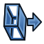

Draft Trimex/pl
|
|
| Lokalizacja w menu |
|---|
| Modyfikacja → Przytnij |
| Środowisko pracy |
| Rysunek Roboczy, BIM |
| Domyślny skrót |
| T R |
| Wprowadzono w wersji |
| - |
| Zobacz także |
| Part: Wyciągnij |
Opis
Polecenie  Przytnij / wydłuż przycina lub wydłuża wybrany obiekt Rysunku Roboczego lub wspierany obiekt BIM. Przecięcia z krawędzią innego obiektu mogą być użyte do określenia nowych punktów końcowych. dostępne w wersji 26.3: wyciąganie ściany to teraz osobne polecenie, zobacz Wyciągnij ścianę.
Przytnij / wydłuż przycina lub wydłuża wybrany obiekt Rysunku Roboczego lub wspierany obiekt BIM. Przecięcia z krawędzią innego obiektu mogą być użyte do określenia nowych punktów końcowych. dostępne w wersji 26.3: wyciąganie ściany to teraz osobne polecenie, zobacz Wyciągnij ścianę.
{kind=link}
Przedłużony odcinek linii, następnie przycięty odcinek linii.
Przytnij lub rozszerz
Użycie
- Opcjonalnie wybierz jeden obiekt. Musi to być obiekt środowiska Rysunek Roboczy Linia, Linia łamana, Łuk, Okrąg (które można tylko przycinać) lub wspierany obiekt BIM (Ściana, Rura, Konstrukcja, Rama, Kratownica lub Panel bez bazy). dostępne w wersji 26.3. Jeśli wybrany obiekt jest zamknięty, musi mieć ustawioną właściwość DANEMake Face na wartość
false. - Istnieje kilka sposobów na wywołanie polecenia:
- Naciśnij przycisk
 Przytnij / Wydłuż.
Przytnij / Wydłuż. - Środowisko pracy Rysunek Roboczy: Wybierz z menu opcję Modyfikacja → Przytnij / Wydłuż.
- Środowisko pracy BIM: Wybierz opcję Modyfikacja → Przytnij / Wydłuż z menu.
- Użyj skrótu klawiaturowego: T, a następnie R.
- Naciśnij przycisk
- Jeśli nie wybrałeś jeszcze obiektu: wybierz obiekt w oknie Widoku 3D.
- Otworzy się panel zadań Przytnij / wydłuż. Zobacz akapit Opcje, aby uzyskać więcej informacji.
- Przesuń kursor w oknie Widoku 3D tak, aby podgląd odpowiadał żądanemu rezultatowi. W razie potrzeby użyj klawiszy modyfikatorów, jak wyjaśniono w punkcie Opcje.
- Wykonaj jedną z następujących czynności:
- Wybierz punkt w oknie Widoku 3D
- Wprowadź Odległość lub Kąt. Odległość jest odległością delta. Ta opcja nie działa, jeśli używane są klawisze modyfikatorów.
- Przesuń kursor nad krawędź należącą do innego obiektu i kliknij, gdy ta krawędź zostanie podświetlona, aby przyciąć lub wydłużyć wybrany obiekt, używając przecięcia z podświetloną krawędzią jako nowego punktu końcowego. Podczas ucinania rzut punktu, w którym krawędź tnąca jest zaznaczona, na obiekt, który ma zostać ucięty, określa wynik domyślny. Zauważ, że przyciąganie może mieć tutaj niepożądany wpływ. W niektórych przypadkach może być konieczne tymczasowe wyłączenie tej funkcjonalności.
introduced in 26.3: For supported BIM objects, picking one of the object's end faces trims or extends it by adjusting its length and placement instead of its underlying wire geometry.
Opcje
Skróty klawiaturowe jedno znakowe dostępne w panelu zadań można zmienić. Zobacz stronę Preferencji. Skróty wymienione tutaj są skrótami domyślnymi.
- Przytrzymaj Alt aby odwrócić domyślny kierunek polecenia.
- Przytrzymaj Shift by ograniczyć operację do bieżącego segmentu linii łamanej.
- Naciśnij klawisz S, aby włączyć lub wyłączyć przyciąganie.
Poniżej znajduje się przykład wyjaśniający działanie klawiszy modyfikatorów. Lewa lub dolna krawędź kształtu-U linii łamanej została wysunięta. Wszystkie rodzaje przyciągania zostały wyłączone.
{kind=link}
- Łuk został kliknięty w pobliżu lewego dolnego rogu linii. Jest to zachowanie domyślne.
- Klawisz Alt został przytrzymany, gdy łuk został kliknięty w pobliżu lewego dolnego rogu linii.
- Wciśnięto klawisz Y, a po najechaniu na lewą krawędź wciśnięto klawisz Shift i kliknięto na łuk. Naciśnięcie przycisku Y jest wymagane tylko w przypadku krawędzi, które są mniej więcej równoległe do osi Y.
Wyciągnij
1.1 and below: This command could also extrude a face into a Part Extrude object. This functionality is now a separate command, see 
{kind=link}
Tworzenie skryptów
Zobacz również stronę: Dokumentacja API generowana automatycznie oraz Podstawy pisania skryptów dla FreeCAD.
Dla narzędzia Przytnij nie ma dostępnego interfejsu programistycznego. Do wyciągania obiektów służy metoda extrude modułu Rysunek Roboczy.
introduced in 26.3: The extrude method example below remains valid; the GUI equivalent is now BIM ExtrudeFace rather than this command.
extrusion = extrude(obj, vector, solid=False)
objto obiekt, który ma zostać wyciągnięty.vectorto kierunek i odległość wyciskania.- Jeśli
solidma wartośćTrue, to zamiast powłoki zostanie utworzona bryła. extrusionjest zwracana wraz z utworzonym obiektem.
Przykład:
import FreeCAD as App
import Draft
doc = App.newDocument()
rectangle = Draft.make_rectangle(1500, 500)
doc.recompute()
vector = App.Vector(0, 0, 300)
solid = Draft.extrude(rectangle, vector, solid=True)
doc.recompute()
- Kreślenie: Linia, Polilinia, Zaokrąglenie, Łuk, Łuk przez 3 punkty, Okrąg, Elipsa, Wielokąt foremny, Krzywa złożona, Krzywa Bezier'a, Punkt, Łącznik ścian, Kształt z tekstu, Kreskowanie, Prostokąt
- Adnotacje: Adnotacja wieloliniowa, Wymiarowanie, Etykieta, Edytor stylów adnotacji, Widżet skali anotacji
- Modyfikacja: Przesuń, Obróć, Skala, Odbicie lustrzane, Odsunięcie, Przytnij, Rozciągnij, Klonuj, Szyk, Szyk biegunowy, Szyk kołowy, Szyk po ścieżce, Szyk powiązań po ścieżce, Szyk z punktów, Szyk powiązań w punktach, Edycja, Podświetl element podrzędny, Połącz, Rozdziel, Ulepsz kształt, Rozbij obiekt na elementy, Polilinia na krzywą złożoną, Rysunek Roboczy do szkicu, Nachylenie, Obróć wymiar, Widok 2D kształtu
- Tacka narzędziowa: Wybór płaszczyzny, Ustaw styl, Przełącz tryb konstrukcyjny, Grupowanie automatyczne
- Przyciąganie: Przełącz przyciąganie, Przyciągnij do punktu końcowego, Przyciągnij do punktu środkowego, Przyciągnij do środka, Przyciągnij do kąta, Przyciąganie do punktu przecięcia, Przyciągnij prostopadle, Rozszerz, Przyciągnij równolegle, Przyciągnij specjalnie, Przyciąganie do najbliższego, Przyciągnij ortogonalnie, Przyciągnij do siatki, Przyciągnij do płaszczyzny roboczej, Przyciągnij do wymiaru, Pokaż / ukryj siatkę
- Różności: Zastosuj bieżący styl, Warstwa, Zarządzaj warstwami, Dodaj grupę o nazwie, Dodaj do grupy, Wybierz grupę, Dodaj do grupy konstrukcyjnej, Przełącz tryb wyświetlania, Pośrednia płaszczyzna robocza, Ulecz, Przełącz tryb kontynuacji, Pokaż przybornik przyciągania
- Dodatkowe:: Wiązania, Wypełnienie wzorem, Preferencje, Ustawienia Importu i Eksportu, DXF/DWG, SVG, OCA, DAT
- Menu podręczne:
- Kontener warstwy: Połącz duplikaty warstw, Dodaj warstwę
- Warstwa: Aktywuj warstwę, Zaznacz zawartość warstwy
- Pośrednia płaszczyzna robocza: Zapisz ujęcie widoku, Zapisz stan obiektów
- Jak zacząć
- Instalacja: Pobieranie programu, Windows, Linux, Mac, Dodatkowych komponentów, Docker, AppImage, Ubuntu Snap
- Podstawy: Informacje na temat FreeCAD, Interfejs użytkownika, Profil nawigacji myszką, Metody wyboru, Nazwa obiektu, Edytor ustawień, Środowiska pracy, Struktura dokumentu, Właściwości, Pomóż w rozwoju FreeCAD, Dotacje
- Pomoc: Poradniki, Wideo poradniki
- Środowiska pracy: Strona Startowa, Złożenie, BIM, CAM, Rysunek Roboczy, MES, Inspekcja, Siatka, OpenSCAD, Część, Projekt Części, Punkty, Inżynieria Wsteczna, Robot, Szkicownik, Arkusz Kalkulacyjny, Powierzchnia 3D, Rysunek Techniczny, Test Framework